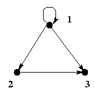
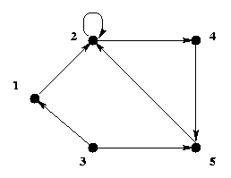
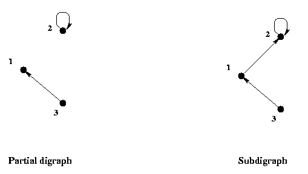

Relation
Digraph
Subjects to be Learned
- digraph
- vertex
- arc
- loop
- in-degree, out-degree
- path,
directed path,
simple path
- cycle
- connected graph
- partial digraph
- subdigraph
Contents
A digraph is short for directed graph, and it is a diagram composed of
points called vertices
(nodes) and arrows called arcs going from a vertex to a vertex.
For example the figure below is a digraph with 3 vertices and 4 arcs.

G1
In this figure the vertices are labeled with numbers 1, 2, and 3.
Mathematically a digraph is defined as follows.
Definition (digraph): A digraph is an ordered pair of sets
G = (V, A), where V is a set of vertices
and A
is a set of ordered pairs (called arcs) of vertices of V.
In the example, G1 , given above, V = { 1, 2, 3 } , and
A = { <1, 1>, <1, 2>, <1, 3>, <2, 3> } .
Digraph representation of binary relations
A binary relation on a set can be represented by a digraph.
Let R be a binary relation on a set A,
that is R is a subset of A
 A.
A.
Then the digraph, call it G, representing R can be constructed as follows:
1. The vertices of the digraph
G are the elements of A,
and
2. <x, y> is an arc of G
from vertex x to vertex y if and only if
<x, y> is in R.
Example: The less than relation R on the set of integers
A = {1, 2, 3, 4}
is the set {<1, 2> , <1, 3>,
<1, 4>, <2, 3> , <2, 4> ,
<3, 4> }
and it
can be represented by the following digraph.

G2
Let us now define some of the basic concepts on digraphs.
Definition (loop): An arc from a vertex to itself such as <1, 1>,
is called a loop (or self-loop)
Definition (degree of vertex):
The in-degree of a vertex is the number of arcs
coming to the vertex, and the out-degree
is the number of arcs going out of the vertex.
For example, the in-degree of vertex 2 in the digraph G2
shown above
is 1, and the out-degree is 2.
Definition (path):
A path from a vertex x0
to a vertex xn in a digraph G = (V, A)
is a sequence of vertices
x0 , x1 , ....., xn
that satisfies the following:
for each i, 0
 i
n - 1
,
<xi , xi + 1>
i
n - 1
,
<xi , xi + 1>
 A ,
or
<xi + 1 , xi>
A ,
that is, between any pair of vertices there is an arc connecting them.
A ,
or
<xi + 1 , xi>
A ,
that is, between any pair of vertices there is an arc connecting them.
x0 is the initial vertex and xn
is the terminal vertex of the path.
A path is called a directed path if
<xi , xi + 1>
A ,
for every i, 0
i
n - 1
.
If the initial and the terminal vertices of a path are the same, that is,
x0 = xn ,
then the path
is called a cycle .
If no arcs appear more than once in a path, the path is called a
simple path.
A path is called elementary if no vertices appear more than once in it except for the initial and terminal vertices of a cycle. In a simple cycle one vertex appears twice in the sequence: once as the initial vertex
and once
as the terminal vertex.
Note: There are two different definitions for "simple path".
Here we follow the definition of Berge[1], Liu[2], Rosen[3] and others.
A "simple path" according to another group (Cormen et al[4], Stanat and McAllister[5] and others) is a path in which no vertices
appear more than once.
Definition(connected graph): A digraph is said to be
connected if there is a path between every pair of its vertices.
Example:
In the digraph G3 given below,
1, 2, 5
is a simple and elementary path but not directed,
1, 2, 2, 5 is a simple path but neither directed nor elementary.
1, 2, 4, 5 is a simple elementary directed path,
1, 2, 4, 5, 2, 4, 5 is a directed path but not simple (hence not elementary),
1, 3, 5, 2, 1 is a simple elementary cycle but not directed, and
2, 4, 5, 2 is a simple elementary directed cycle.
This digraph is connected.

G3
Sometimes we need to refer to part of a given digraph. A partial digraph
of a digraph is a digraph consisting of arbitrary numbers of vertices and arcs of the given digraph, while
a subdigraph is a digraph consisting of an arbitrary number of vertices
and all the arcs between them of the given
digraph. Formally they are defined as follows:
Definition (subdigraph, partial digraph):
Let G = ( V, A ) be a digraph.
Then a digraph ( V', A' )
is a partial digraph of G ,
if V'
 V ,
and
A'
A
V ,
and
A'
A
 ( V'
V' ) .
It is a subdigraph of G ,
if V'
V ,
and
A'
=
A
( V'
V' )
( V'
V' ) .
It is a subdigraph of G ,
if V'
V ,
and
A'
=
A
( V'
V' )
A partial digraph and a subdigraph of G3 given above are shown below.

Test Your Understanding of Digraph
Indicate which of the following statements are correct and which are not.
Click True or False , then Submit. There are two sets of questions.
The digraph in the exercise questions below is G3 repeated below unless otherwise specified.
Next -- Digraph Representaion of Binary Relation
Back to Schedule
Back to Table of Contents